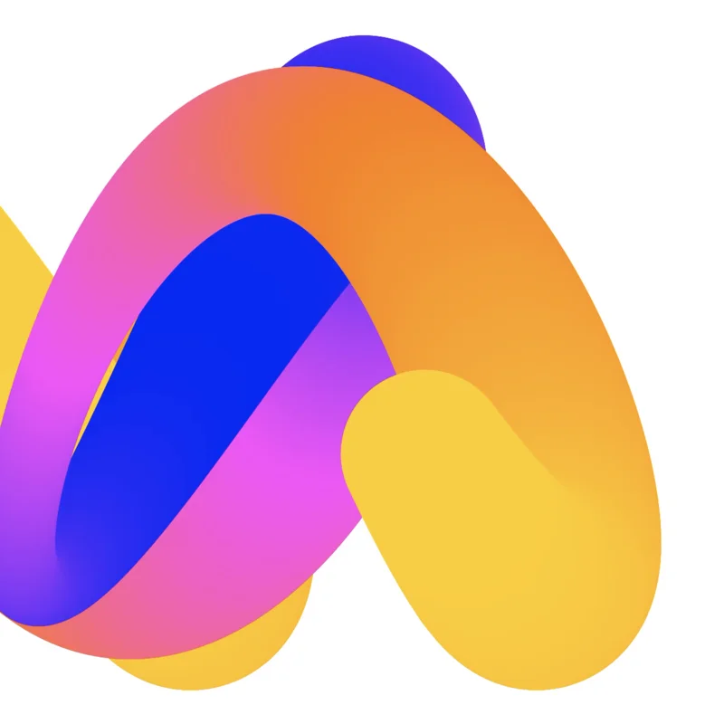
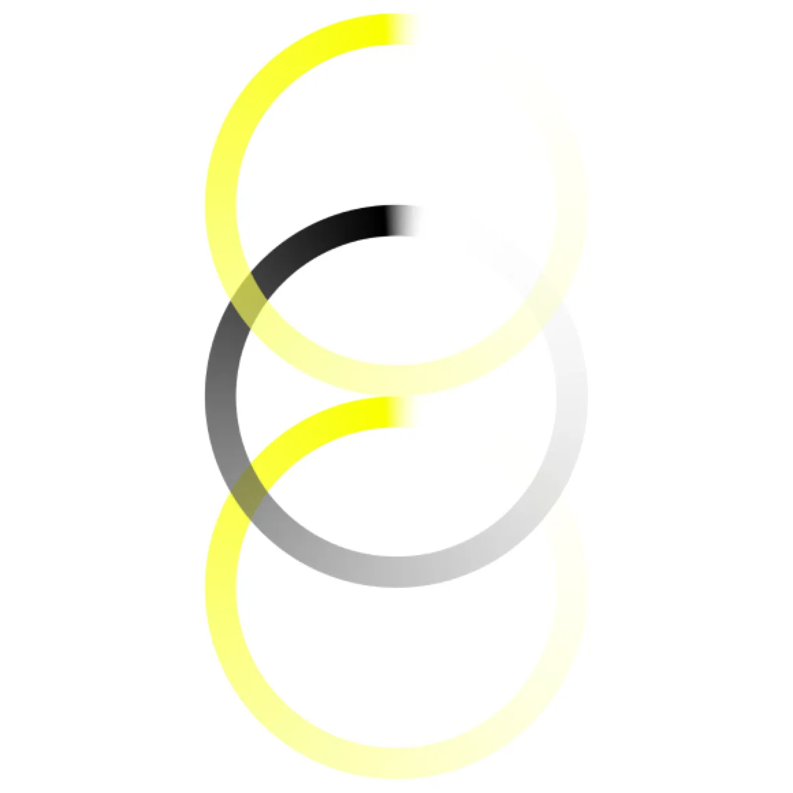

Creative direction for brand, product and systems, amplified by AI.
AI can generate and accelerate, but it cannot decide what matters. I use it to move faster through possibilities, while human judgment, taste and intent shape the outcome.
Brand identities and visual systems shaped through creative direction and AI exploration.
Brand & Visual Systems
Explore

Let's shape what's next.
Open for freelance projects, collaborations and AI-native creative systems.